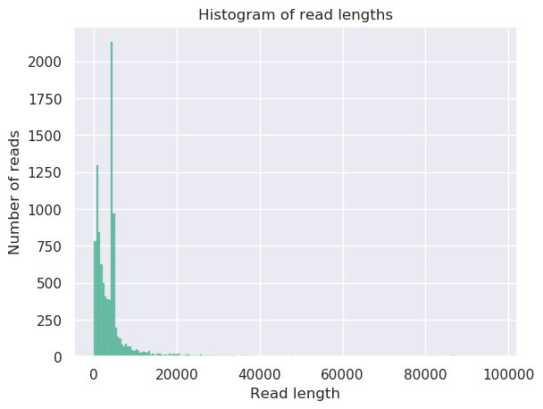

Antibiotic resistance detection
OverviewQuestions:
Objectives:
How do I assemble a genome with Nanopore data?
How do I get more information about the structure of the genomes?
How do I get more information about the antimicrobial resistance genes?
Requirements:
Perform Quality control on your reads
Assemble a genome with Minimap2/Miniasm/Racon
Determine the structure of the genome(s)
Scan for antimicrobial resistance genes with Staramr
Time estimation: 3 hoursSupporting Materials:Published: Jun 25, 2019Last modification: Jun 14, 2024License: Tutorial Content is licensed under Creative Commons Attribution 4.0 International License. The GTN Framework is licensed under MITpurl PURL: https://gxy.io/GTN:T00394rating Rating: 5.0 (0 recent ratings, 10 all time)version Revision: 4
Overview
Pervasive use (and misuse) of antibiotics for human disease treatment, as well as for various agricultural purposes, has resulted in the evolution of multi-drug resistant (MDR) pathogenic bacteria. The Center for Disease Control estimates that in the U.S. alone, every year at least 2 million people get an antibiotic-resistant infection, and at least 23,000 people die. Antibiotic resistance poses a major public health challenge, and its causes and mitigations are widely studied.
Plasmids are small DNA molecules within a cell which are physically separated from chromosomal DNA and can replicate independently. They are most commonly found as small circular, double-stranded DNA molecules in bacteria.
Plasmids are considered a major vector facilitating the transmission of drug resistant genes among bacteria via horizontal transfer (Beatson and Walker 2014, Smillie et al. 2010). Careful characterization of plasmids and other MDR mobile genetic elements is vital for understanding their evolution and transmission and adaptation to new hosts.
Due to the high prevalence of repeat sequences and inserts in plasmids, using traditional NGS short-read sequencing to assemble plasmid sequences is difficult and time-consuming. With the advent of third-generation single-molecule long-read sequencing technologies, full assembly of plasmid sequences is now possible.
In this tutorial we will recreate the analysis described in the paper by Li et al. 2018 entitled Efficient generation of complete sequences of MDR-encoding plasmids by rapid assembly of MinION barcoding sequencing data. We will use data sequenced by the Nanopore MinION sequencer.
The assembly will be performed with Minimap2 tool (Li 2018), Miniasm tool (Li et al. 2015), Racon tool (Vaser et al. 2017) and Unicycler tool (Wick et al. 2017). The downstream analysis will use Nanoplot tool (Coster et al. 2018), Bandage tool (Wick et al. 2015), PlasFlow tool (Krawczyk et al. 2018) and starmr tool (GitHub).
A schematic view of the workflow we will perform in this tutorial is given below:
AgendaIn this tutorial, we will cover:
Comment: Results may varyYour results may be slightly different from the ones presented in this tutorial due to differing versions of tools, reference data, external databases, or because of stochastic processes in the algorithms.
In this tutorial we use metagenomic Nanopore data, but similar pipelines can be used for other types of datasets or other long-read sequencing platforms.
Obtaining and preparing data
We are interested in the reconstruction of full plasmid sequences and determining the presence of any antimicrobial resistance genes. We will use the plasmid dataset created by Li et al. 2018 for their evaluation of the efficiency of MDR plasmid sequencing by MinION platform. In the experiment, 12 MDR plasmid-bearing bacterial strains were selected for plasmid extraction, including E. coli, S. typhimurium, V. parahaemolyticus, and K. pneumoniae.
Comment: Nanopore sequencingNanopore sequencing has several properties that make it well-suited for our purposes
- Long-read sequencing technology offers simplified and less ambiguous genome assembly
- Long-read sequencing gives the ability to span repetitive genomic regions
- Long-read sequencing makes it possible to identify large structural variations
")
When using Oxford Nanopore Technologies (ONT) sequencing, the change in electrical current is measured over the membrane of a flow cell. When nucleotides pass the pores in the flow cell the current change is translated (basecalled) to nucleotides by a basecaller. A schematic overview is given in the picture above.
When sequencing using a MinIT or MinION Mk1C, the basecalling software is present on the devices. With basecalling the electrical signals are translated to bases (A,T,G,C) with a quality score per base. The sequenced DNA strand will be basecalled and this will form one read. Multiple reads will be stored in a fastq file.
Importing the data into Galaxy
For this tutorial, in order to speed up the analysis time, we will use 6 of the 12 samples from the original study.
Hands-on: Obtaining our data
Make sure you have an empty analysis history. Give it a name.
To create a new history simply click the new-history icon at the top of the history panel:
- Import Sample Data

https://zenodo.org/record/3247504/files/RB01.fasta https://zenodo.org/record/3247504/files/RB02.fasta https://zenodo.org/record/3247504/files/RB04.fasta https://zenodo.org/record/3247504/files/RB05.fasta https://zenodo.org/record/3247504/files/RB10.fasta https://zenodo.org/record/3247504/files/RB12.fasta
- Copy the link location
Click galaxy-upload Upload Data at the top of the tool panel
- Select galaxy-wf-edit Paste/Fetch Data
Paste the link(s) into the text field
Press Start
- Close the window
Build a list collection containing all fasta files. Name it
Plasmids
- Click on galaxy-selector Select Items at the top of the history panel
- Check all the datasets in your history you would like to include
Click n of N selected and choose Build Dataset List
- Enter a name for your collection
- Click Create collection to build your collection
- Click on the checkmark icon at the top of your history again


Quality Control
NanoPlot to explore data
The first thing we want to do is to get a feeling for our input data and its quality. This is done using the NanoPlot tool. This will create several plots, a statisical report and an HTML report page.
Hands-on: Plotting scripts for long read sequencing data
- Nanoplot ( Galaxy version 1.28.2+galaxy1) with the following parameters
- param-select “Select multifile mode”:
batch- param-select “Type of the file(s) to work on”:
fasta- param-collection “files”: The
Plasmidsdataset collection you just created
- Click on param-collection Dataset collection in front of the input parameter you want to supply the collection to.
- Select the collection you want to use from the list
The HTML report gives an overview of various QC metrics for each sample. For example, it will
plot the read length distribution of each sample:

QuestionWhat was the mean read length for this (RB01) sample?
4906.3
This can be determined by looking at the NanoStats or HTML output of NanoPlot RB01.
For more information on the topic of quality control, please see our sequence analysis training materials
De-novo Assembly
Pairwise alignment using Minimap2
In this experiment we used Nanopore sequencing; this means sequencing results with long reads, and significant overlaps between those reads. To find this overlap, Minimap2 is used. Minimap2 is a sequence alignment program that can be used for different purposes, but in this case we’ll use it to find overlaps between long reads with an error rate up to ~15%. Typical other use cases for Minimap2 include:
- mapping PacBio or Oxford Nanopore genomic reads to the human genome
- splice-aware alignment of PacBio Iso-Seq or Nanopore cDNA or Direct RNA reads against a reference genome
- aligning Illumina single- or paired-end reads
- assembly-to-assembly alignment
- full-genome alignment between two closely related species with divergence below ~15%.
Minimap2 is faster and more accurate than mainstream long-read mappers such as BLASR, BWA-MEM, NGMLR and GMAP and therefore widely used for Nanopore alignment. Detailed evaluations of Minimap2 are available in the Minimap2 publication (Li 2018).
Hands-on: Pairwise sequence alignment
- Map with minimap2 ( Galaxy version 2.17+galaxy2) with the following parameters
- param-select “Will you select a reference genome from your history or use a built-in index?”:
Use a genome from history and build index
- param-collection “Use the following data collection as the reference sequence”:
Plasmidsdataset collection we just created- param-select “Single or Paired-end reads”:
Single
- param-collection “Select fastq dataset”: The
Plasmidsdataset collection- param-select “Select a profile of preset options”:
Oxford Nanopore all-vs-all overlap mapping- In the section Set advanced output options:
- param-select “Select an output format”:
paf
- Click on param-collection Dataset collection in front of the input parameter you want to supply the collection to.
- Select the collection you want to use from the list
This step maps the Nanopore sequence reads against itself to find overlaps. The result is a PAF file. PAF is a text format describing the approximate mapping positions between two set of sequences. PAF is TAB-delimited with each line consisting of the following predefined fields:
| Col | Type | Description |
|---|---|---|
| 1 | string | Query sequence name |
| 2 | int | Query sequence length |
| 3 | int | Query start (0-based) |
| 4 | int | Query end (0-based) |
| 5 | char | Relative strand: “+” or “-“ |
| 6 | string | Target sequence name |
| 7 | int | Target sequence length |
| 8 | int | Target start on original strand (0-based) |
| 9 | int | Target end on original strand (0-based) |
| 10 | int | Number of residue matches |
| 11 | int | Alignment block length |
| 12 | int | Mapping quality (0-255; 255 for missing) |
View the output of Minimap2 tool of the collection against RB12, it should look something like this:
channel_100_69f2ea89-01c5-45f4-8e1b-55a09acdb3f5_template 4518 114 2613 + channel_139_250c7e7b-f063-4313-8564-d3efbfa7e38d_template 3657 206 2732 273 2605 0 tp:A:S cm:i:29 s1:i:240 dv:f:0.2016 rl:i:1516
channel_100_69f2ea89-01c5-45f4-8e1b-55a09acdb3f5_template 4518 148 1212 + channel_313_35f447cb-7e4b-4c3d-977e-dc0de2717a4d_template 3776 2433 3450 218 1064 0 tp:A:S cm:i:31 s1:i:210 dv:f:0.1291 rl:i:1516
channel_100_69f2ea89-01c5-45f4-8e1b-55a09acdb3f5_template 4518 251 1328 + channel_313_a83f7257-52db-46e4-8e2a-1776500c7363_template 3699 2327 3382 208 1082 0 tp:A:S cm:i:29 s1:i:203 dv:f:0.1363 rl:i:1516
Ultrafast de novo assembly using Miniasm
The mapped reads are ready to be assembled with Miniasm tool (Li et al. 2015). Miniasm is a very fast Overlap Layout Consensus based de-novo assembler for noisy long reads. It takes all-vs-all read self-mappings (typically by Minimap2 tool) as input and outputs an assembly graph in the GFA format.
Different from mainstream assemblers, miniasm does not have a consensus step. It simply concatenates pieces of read sequences to generate the final sequences. The optimal case would be to recreate a complete chromosome or plasmid. Thus the per-base error rate is similar to the raw input reads.
Hands-on: De novo assembly
- miniasm ( Galaxy version 0.3+galaxy0) with the following parameters
- param-collection “Sequence Reads”: The
Plasmidsdataset collection- param-collection “PAF file”:
Output Minimap dataset collectioncreated by Minimap2 tool
- Click on param-collection Dataset collection in front of the input parameter you want to supply the collection to.
- Select the collection you want to use from the list
The Assembly Graph output file gives information about the steps taken in the assembly.
The output should look like:
S utg000001l GAAATCATCAGGCGTTTTTCACGATATGGACGGGAAGATGCGGAAATAGGCAGGAGGACATAGAA [..]
a utg000001l 0 channel_364_204a2254-2b6f-4f10-9ec5-6d40f0b870e4_template:101-4457 + 4357
Remapping using Minimap2
Remapping is done with the original reads, using the Miniasm assembly as a reference, in order to improve the consensus base call per position. This is used by Racon tool for consensus construction. This is done as some reads which might not have mapped well during the consensus calling, will now map to your scaffold.
The Assembly graph created can be used for mapping again with Minimap2, but first the graph should be transformed to FASTA format.
Hands-on: Pairwise sequence alignment
- GFA to Fasta ( Galaxy version 0.1.1) with the following parameters
- param-collection “Input GFA file”: the
Assembly Graph(collection) created by Miniasm toolQuestionHow many contigs do we have for the RB05 sample after de novo assembly?
Hint: run Nanoplot tool on the output of GFA to Fasta tool25
This can be determined by looking at the NanoStats output of NanoPlot.
- Map with minimap2 ( Galaxy version 2.17+galaxy2) with the following parameters
- param-select “Will you select a reference genome from your history or use a built-in index?”:
Use a genome from history and build index
- param-collection “Use the following dataset as the reference sequence”:
FASTA fileoutput from GFA to Fasta tool (collection)- param-select “Single or Paired-end reads”:
single
- param-collection “Select fastq dataset”: The
Plasmidscollection- param-select “Select a profile of preset options”::
PacBio/Oxford Nanopore read to reference mapping (-Hk19)- In the section Set advanced output options:
- param-select “Select an output format”:
paf
- Click on param-collection Dataset collection in front of the input parameter you want to supply the collection to.
- Select the collection you want to use from the list
Ultrafast consensus module using Racon
The mapped reads can be improved even more using Racon tool (Vaser et al. 2017) to find a consensus sequence. Racon is a standalone consensus module to correct raw contigs generated by rapid assembly methods which do not include a consensus step. It supports data produced by both Pacific Biosciences and Oxford Nanopore Technologies.
Hands-on: Consensus module
- Racon ( Galaxy version 1.4.13) with the following parameters
- param-collection “Sequences”: The
Plasmidsdataset collection- param-collection “Overlaps”: the latest
PAF filecollection created by Minimap2 tool- param-collection “Target sequences”: the
FASTA filecollection created by GFA to Fasta tool
The Racon tool output file gives the final contigs.
The output of RB04 should look something like:
>utg000001c LN:i:4653 RC:i:11 XC:f:0.888889
AATGCAGCTATGGCGCGTGCGGTGCCAAGAAAGCCCGCAGATATTCCGCTTCCTCGCTCATT [..]
Visualize assemblies using Bandage
To get a sense of how well our data was assembled, and to determine whether the contigs are chomosomal or plasmid DNA (the former being linear sequences while plasmids are circular molecules), Bandage tool can give a clear view of the assembly.
Bandage tool (Wick et al. 2015) (a Bioinformatics Application for Navigating De novo Assembly Graphs Easily), is a program that creates visualisations of assembly graphs. Sequence assembler programs (such as Miniasm tool (Li et al. 2015), Velvet tool (Zerbino and Birney 2008), SPAdes tool (Bankevich et al. 2012), Trinity tool (Grabherr et al. 2011) and MEGAHIT tool Li et al. 2015) carry out assembly by building a graph, from which contigs are generated.
By visualizing these assembly graphs, Bandage allows users to better understand, troubleshoot, and improve the assemblies.
Hands-on: Visualising de novo assembly graphs
- Bandage image ( Galaxy version 0.8.1+galaxy2) with the following parameters
- param-collection “Graphical Fragment Assembly”: the
Assembly graphcollection created by Miniasm tool- Explore galaxy-eye the output images
QuestionIn how many samples were the full plasmid sequences assembled?
Hint: what shape do you expect plasmid molecules to be?
Ideally, we want to see circular assemblies, indicating the full plasmid sequence was resolved. This is not the case for most of the samples, but we will improve our assemblies in the next section!
For example, the assembly for sample RB01 looks something like this (your assembly will look a bit different due to randomness in several of the tools):
As you can see from these Bandage outputs, we were able to assemble our data into fairly large fragments, but were not quite successful in assembling the full (circular) plasmid sequences.
However, all the tools we used to do the assembly have many different parameters that we did not explore, and multiple rounds of mapping and cleaning could improve our data as well. Choosing these parameters carefully could potentially improve our assembly, but this is also a lot of work and not an easy task. This is where Unicycler tool (Wick et al. 2017) can help us out.
Optimizing assemblies using Unicycler
The assembly tools we used in this tutorial are all implemented in Unicycler tool, which will repeatedly run these tools on your data using different parameter settings, in order to find the optimal assembly.
Unicycler tool has a couple of advantages over running the tools separately:
- The first modification is to help circular replicons assemble into circular string graphs.
- Racon tool polishing is carried out in multiple rounds to improve the sequence accuracy. It will polish until the assembly stops improving, as measured by the agreement between the reads and the assembly.
- Circular replicons are ‘rotated’ (have their starting position shifted) between rounds of polishing to ensure that no part of the sequence is left unpolished.
Let’s try it on our data!
Hands-on: Unicycler assembly
- Create assemblies with Unicycler ( Galaxy version 0.4.8.0) with the following parameters
- param-select “Paired or Single end data”:
None- param-collection “Select long reads. If there are no long reads, leave this empty”: The
Plasmidsdataset collection- Bandage image ( Galaxy version 0.8.1+galaxy2) with the following parameters
- param-collection “Graphical Fragment Assembly”: the
Final Assembly Graphcollection created by Unicycler toolExamine galaxy-eye the output images again
- Use the Scratchbook galaxy-scratchbook to compare the two assemblies for sample
RB01
- Compare the Bandage tool images for our two assemblies:
- The assembly we got from running minimap2, miniasm, racon tool (first time we ran bandage)
- The assembly obtained with Unicycler tool
- Tip: Search your history for the term
bandageto easily find the outputs from our two bandage runsIf you would like to view two or more datasets at once, you can use the Window Manager feature in Galaxy:
- Click on the Window Manager icon galaxy-scratchbook on the top menu bar.
- You should see a little checkmark on the icon now
- View galaxy-eye a dataset by clicking on the eye icon galaxy-eye to view the output
- You should see the output in a window overlayed over Galaxy
- You can resize this window by dragging the bottom-right corner
- Click outside the file to exit the Window Manager
- View galaxy-eye a second dataset from your history
- You should now see a second window with the new dataset
- This makes it easier to compare the two outputs
- Repeat this for as many files as you would like to compare
- You can turn off the Window Manager galaxy-scratchbook by clicking on the icon again
To make it easier to find datasets in large histories, you can filter your history by keywords as follows:
Click on the search datasets box at the top of the history panel.
- Type a search term in this box
- For example a tool name, or sample name
- To undo the filtering and show your full history again, press on the clear search button galaxy-clear next to the search box
Repeat this comparison for the other samples.
QuestionFor which samples has the plasmid assembly improved?
Exploring the outputs for all the samples reveals that many now display circular assemblies, indicating the full plasmids sequence was resolved.

{kind=link}
{kind=link}
{kind=link}
{kind=link}
{kind=link}
{kind=link}
{kind=link}
{kind=link}
The Assembly graph image of the RB01 assembly with miniasm tool shows one unclear hypothetical plasmid, where the output of Unicycler tool shows two clear plasmids, as also shown by Li et al. 2018.
{kind=link}
Species and plasmids
Prediction of plasmid sequences and classes using PlasFlow
To automatically determine whether the contigs represent chromosomal or plasmid DNA, PlasFlow tool (Krawczyk et al. 2018) can be used, also in the case where a full circular plasmid sequence was not assembled. Furthermore, it assigns the contigs to a bacterial class.
PlasFlow tool is a set of scripts used for prediction of plasmid sequences in metagenomic contigs. It relies on the neural network models trained on full genome and plasmid sequences and is able to differentiate between plasmids and chromosomes with accuracy reaching 96%.
{kind=link}
Hands-on: Prediction of plasmid sequences
- PlasFlow ( Galaxy version 1.0) with the following parameters
- param-collection “Sequence Reads”: the
Final Assemblycollection created by Unicycler toolQuestionWhat is the classification of contig_id 0 in RB10? (Hint: Check the probability table created by PlasFlow)
plasmid.Proteobacteria
This can be determined by looking at the 5th column of the probability table.
The most important output of PlasFlow tool is a tabular file containing all predictions, consisting of several columns including:
contig_id contig_name contig_length id label ...
where:
contig_idis an internal id of sequence used for the classificationcontig_nameis a name of contig used in the classificationcontig_lengthshows the length of a classified sequenceidis an internal id of a produced label (classification)labelis the actual classification...represents additional columns showing probabilities of assignment to each possible class
Additionally, PlasFlow produces FASTA files containing input sequences binned to plasmids, chromosomes and unclassified.
Antibiotic Resistance
Scan genome contigs for antimicrobial resistance genes
To determine whether the contigs contain antimircobial resistance genes (AMR) staramr can be used. Staramr tool scans bacterial genome contigs against both the ResFinder (Zankari et al. 2012), PointFinder (Zankari et al. 2017), and PlasmidFinder (Carattoli et al. 2014) databases (used by the ResFinder webservice) and compiles a summary report of detected antimicrobial resistance genes.
{kind=link}
Hands-on: Prediction of AMR genes
- staramr ( Galaxy version 0.7.1+galaxy2) with the following parameters
- param-collection “genomes”: the
Final Assemblycollection created by Unicycler toolQuestionWhich samples contained the resistance gene: dfrA17?
Hint: Check the resfinder.tsv created by staramr
RB01, RB02, and RB10
This can be determined by looking at the 2nd column of the resfinder.tsv output (and the first column for the sample names).
There are 5 different output files produced by staramr tool:
summary.tsv: A summary of all detected AMR genes/mutations in each genome, one genome per line.resfinder.tsv: A tabular file of each AMR gene and additional BLAST information from the ResFinder database, one gene per line.pointfinder.tsv: A tabular file of each AMR point mutation and additional BLAST information from the PointFinder database, one gene per line.settings.txt: The command-line, database versions, and other settings used to runstaramr.results.xlsx: An Excel spreadsheet containing the previous 4 files as separate worksheets.
The summary file is most important and provides all the resistance genes found.
CARD database
To get more information about these antibiotic resistant genes, you can check the CARD database (Comprehensive Antibiotic Resistance Database) (Jia et al. 2016)
QuestionWhat is the resistance mechanism of the dfrA17 gene?
antibiotic target replacement
This can be determined by searching for the gene on the CARD database
For more information about antibiotic resistance mechanisms, see Munita and Arias
Conclusion
You have now seen how to perform an assembly on Nanopore sequencing data, and classify the type and species of the sequences, as well as determined the presence of potential antibiotic resistance genes.
As for any analysis, there are many different tools that can do the job, and the tools presented here are just one possible pipeline. Which tools are best for your specific data and research question depends on a number of factors. For more information and comparisons between various tools, review papers such as Maio et al. 2019 and Jayakumar and Sakakibara 2017 may provide further insight.
You have worked your way through the following pipeline: